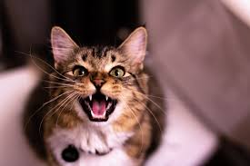

고양이에 대해서3
고양이는 사냥감을 죽이고 고기를 찢기에 좋은 아주 특수한 이빨을 가지고 있다. 앞 어금니와 첫 번째 어금니는 육식용으로 입 양쪽에 쌍을 이루고 있으며, 한 쌍이 가위와 같이 고기를 효율적으로 자를 수 있는 기능을 한다. 고양이의 어금니를 다른 말로 열육치라고 부른다. 이러한 것은 다른 야수들에게도 존재하지만, 특히 고양이과의 동물들에게 잘 발달되어 있다.
보통 고양이는 이빨로 음식을 씹는다기보다는 음식을 잘라서 먹는다고 볼 수 있다.
구강 구조에 의하여 고양이들은 야옹거리기, 골골거리기, 하악 거리기, 으르렁거리기, 빽빽거리기, 짹짹거리기, 찰칵 소리 내기, 끙끙거리기 등의 다양한 발성과 몸짓으로 의사소통을 한다. 특히 야옹거리는 소리가 때에 따라 다르기 때문에 알아듣기 어려울 수 있다.
